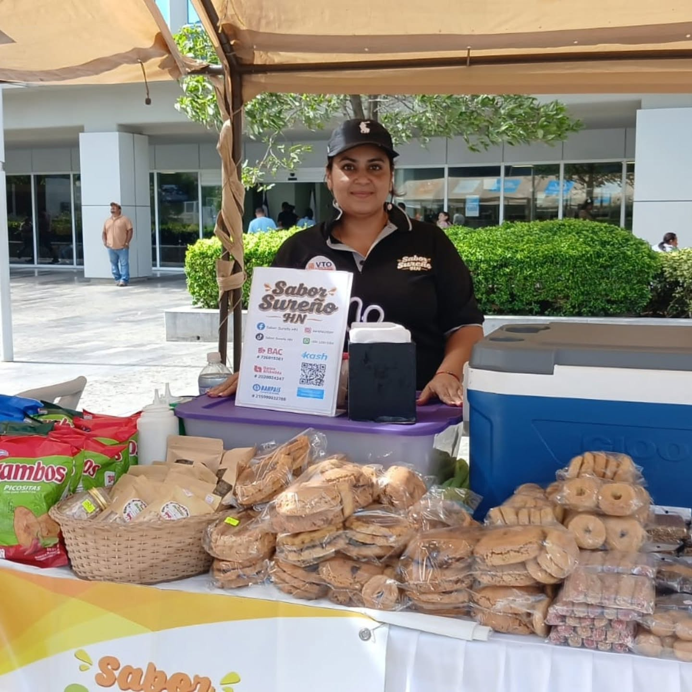
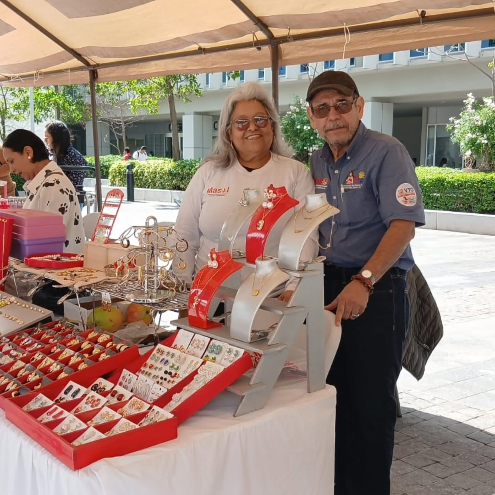

Nuestros Emprendimientos
Promovemos la inclusión económica de las madres mediante la creación, fortalecimiento y promoción de proyectos productivos que generan sostenibilidad para sus familias.

Repostería y Dulces
Elaboración y comercialización de galletas y bocadillos artesanales preparados por las madres.

Gastronomía Local
Comercialización de snacks y bocadillos tradicionales a través de microemprendimientos locales.

Artesanías y Bisutería
Exhibición y venta directa de accesorios, joyería artesanal y manualidades únicas.